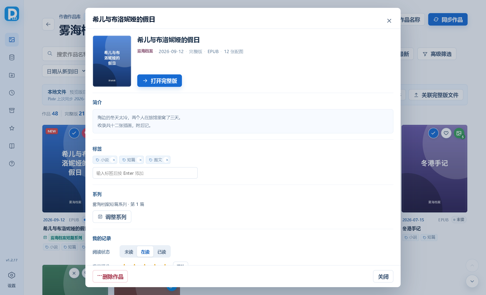
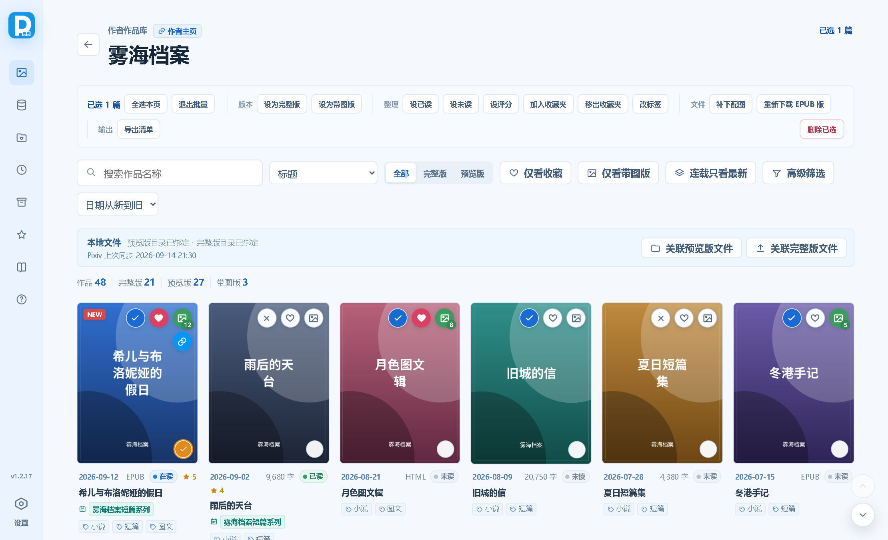
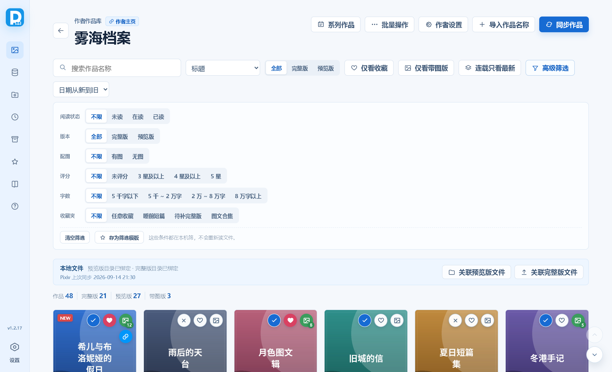
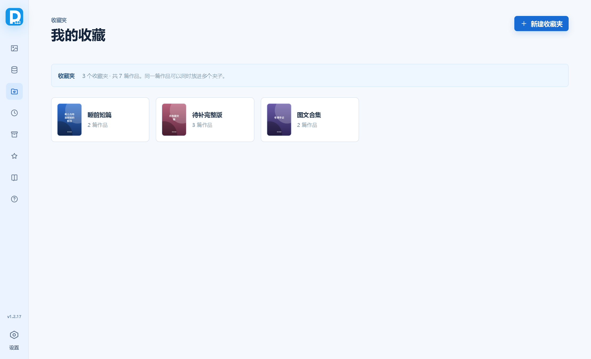
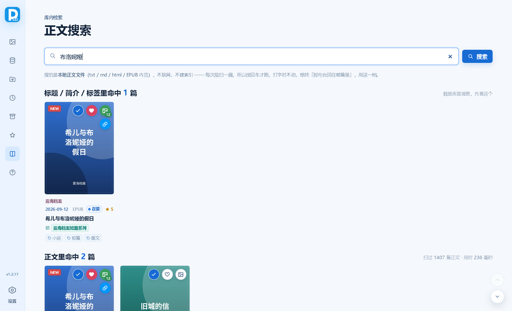

Pixiv小说下载管理器
Windows 本地作品管理软件：按作者管理 Pixiv 小说的预览版与完整版文件，记录购买状态、封面、标签、系列、收藏与阅读记录。
01安装与启动
免安装，绿色便携。
- 到 Releases 下载最新版 exe，放到一个固定的文件夹里（别放桌面，容易误删）。
- 双击 exe 就能用。首次启动会在 exe 同级目录创建
data文件夹，数据库和封面都存在里面。 - 整份迁移到别的电脑时，把 exe 所在的整个文件夹一起复制过去，数据跟着走。
系统要求：Windows 10 / 11，需要 Microsoft Edge WebView2 Runtime（Windows 11 通常自带；缺了程序会提示）。
软件不会碰你原来的小说文件 —— 它只记录「哪个作品对应磁盘上哪个文件」，导出、清理这类会动磁盘的操作都有二次确认。
装好后第一件事是填 Pixiv Cookie（见 第 3 节）—— 没有它什么都同步不下来。
02首次设置
左下角齿轮进入；改完自动保存，没有保存按钮。

- 1 · Pixiv 账号
- 2 · 文件与目录
- 3 · 匹配与关联
- 4 · 下载与图文
- 5 · 搜索网站
- 6 · 维护与数据
每块里都有什么：
- 1 · Pixiv 账号：Pixiv Cookie、排除标签、抓取间隔、Cookie 体检。
- 2 · 文件与目录：最小文件大小、预览版 / 完整版默认目录、完整版自动分组文件夹、自动创建作者目录。
- 3 · 匹配与关联：关联相似度阈值、最小相似度阈值、匹配作品名长度、常见角色名列表。
- 4 · 下载与图文：配图画质、同步图文小说时自动保存为 HTML 还是 EPUB。
- 5 · 搜索网站：作品卡右键菜单里的搜索入口。
- 6 · 维护与数据：软件更新、浏览历史、自动备份，以及补抓简介 / 补齐封面 / 检查文件 / 清理预览版 / 导出与恢复备份这些一次性动作。
最少要填这几项：
- 预览版 / 完整版默认目录：新建作者时用来生成作者目录。打开「自动创建作者目录」后，保存作者就会按作者名自动建目录并绑定。
- Pixiv Cookie（必填）：没填就同步不了，导出方法见下一节。程序只保存 Pixiv 接口需要的
PHPSESSID。 - 最小文件大小：导入文件夹和同步时，小于这个值的 txt 会被跳过，防止把空文件当成作品。文件夹本身不受这个限制。
- 关联相似度：文件名和作品标题不完全相同时，达到这个分数才自动关联。默认 70，嫌严就调低。
设置没有保存按钮。停手半秒就自动写进数据库，页脚会显示「已自动保存 21:35:02」。填到一半、通不过校验的值不会存进去，页脚会红字写明原因（例如网址少了 =），改对就自动存。
03获取 Pixiv Cookie
最要紧的一步 —— 没有 Cookie，同步基本跑不起来。
Cookie 等同于登录凭据，必须先有它才能同步。作品列表、正文、封面、R-18 内容全都得凭登录身份去取：没填或已失效时，同步会失败，或者只拿到一小部分作品。
它通常 1–2 周后过期，同步失败时重新导出一份换上即可。另外 —— 不要发给别人，也别把 Cookie 截图公开。
方法
- 用 Chrome / Edge 打开 www.pixiv.net，登录你自己的账号（要取 R-18 内容必须是登录状态）。
- 装一个能导出 Cookie 的浏览器扩展。下图用的是「导入cookie」，其他同类扩展（Cookie-Editor、EditThisCookie 等）操作也差不多。
- 点扩展图标打开 Cookie 列表，找到
www.pixiv.net那一组。 - 点导出按钮，弹出来的 Export As 里选 JSON。
- 把导出的全部文本粘进「设置 → 1 · Pixiv 账号 → Pixiv Cookie」；也可以点旁边的「从文件导入」直接选那个
.json文件。改完自动保存，没有保存按钮。

__cf_bm、__utma 之类的条目不用管，导出的是整组。粘贴格式：JSON 和 Header String 都收，别选 Netscape
- 推荐 JSON：扩展导出的原始数组，程序按
domain/name/value三个字段解析。 - Header String 也能用：就是
PHPSESSID=xxxx; other=yyyy那种一行文本，从浏览器开发者工具 Network → 请求头 → Cookie 直接复制的那串也属于这种。只想填最要紧的那一个时，光粘PHPSESSID=…一段也行。 - 不要选 Netscape：那是制表符分隔的格式，程序认不出来。
整段内容都粘进去没关系，程序只挑出 Pixiv 登录要用的 PHPSESSID 存进数据库，其余读完即弃，不会外传。要是整段里找不到 PHPSESSID（比如贴错了别的站点的 Cookie），会直接报「Cookie 中未找到 Pixiv 登录所需的 PHPSESSID」并且不保存。
Cookie 体检
填完不用等同步跑到一半才发现不对 —— 「设置 → 1 · Pixiv 账号」里 Cookie 框下面有个 「测试 Cookie」 按钮：
- 它拿当前框里填的那一份向 Pixiv 发一个只读请求（框里空着时测的是已保存的那份）。刚粘贴完就点，不用等自动保存那半秒。
- 有效 → 绿字给出登录的账号名，方便确认换的是不是想要的那个号；同时当天不再弹启动提醒。
- 失效 / 没填 / 连不上，分别给不同的说明：失效该重新导出一份，连不上该去查网络或代理，没填只是还没设置。不会一律糊成一句「失效了」让你白折腾。
程序每次启动也会自动验一次，只在「已失效」时提醒（每天最多一次）。从来没填过不会弹 —— 那属于还没设置，不是坏了。
Cookie 失效只影响 R-18 作品和完整作品列表，不影响本地已有的文件。
04作者库
一切从这里开始 —— 作品是按作者归档的。

- 新增作者：填 Pixiv 作者主页后点「同步作者信息」，会自动读取作者名和头像。配好默认目录并打开「自动创建作者目录」时，保存就会自动建好预览版、完整版两个目录。
- 新增角标：作者头像右上角出现橙色数字，表示上次同步之后新发现的、还没打开过的作品数；超过 99 显示
99+，鼠标停上去能看到完整说明。卡上还会带一句「上次同步 …」。 - 只看特别关注：把常看的作者点星星标上，一键筛出来。
- 拖动排序：每张卡名字右边有一个六点拖动按钮，按住约 0.2 秒卡片会被「拿起来」——一张跟着鼠标走的浮层卡片出现在最上层（微微倾斜、带投影），原位置留下半透明虚位；挪到别处时其余卡片会顺势滑开让位，松手放下就排好了，顺序会存进库里。
轻轻点一下（不到 0.2 秒）不会触发拖动，也不会误进作品库。没拖过的作者按名字排，并一律排在拖过的作者后面。
05同步 Pixiv 小说
正文、封面、投稿日期、标签、系列一次拿下来。

- 批量同步：填开始 / 结束日期时按 Pixiv 原始投稿日期筛选；两个日期都留空则只检查上次成功同步之后的新投稿。同步会显示进度，可以随时「终止同步」。
- 同步单篇：在「单篇小说地址」里填
https://www.pixiv.net/novel/show.php?id=28686066这样的地址，就只同步这一篇，不读作者主页列表，也不更新「上次成功同步」时间。 - 已有文件不会重下：同步时如果预览版目录里已经有一份名字完全相同的文件，会直接关联上，不重复下载。（只有名字一模一样才算，不会拿「其一」去顶「其二」。）
- 限速：「设置 → Pixiv 抓取间隔」默认是同步超过 150 篇时每篇间隔 1 秒，可按需调整。「补抓作品简介」也吃这个设置。连续失败时间隔会自动翻倍（最多 60 秒），实在不行会提前停下，免得一直喂风控。
- 封面会自动压一道：从 Pixiv 下来的封面在存盘前统一压到合适的质量（界面里从没按原尺寸显示过，压完看不出区别），一张封面从两百多 KB 降到几十 KB，省的是硬盘。只写压缩后的那一份，不留原图。
预览版还是完整版？
同步时读作品简介来判定：简介里含「全文」（「全文放出」除外）或含「购买」的，判为预览版；其余判为完整版。判定只在同步那一刻做一次，之后改规则不会回溯老作品。
一个作品只占一边。判为完整版的，正文、封面、配图和图文版整份放进完整版目录；判为预览版的整份留在预览版目录。软件不会在两边各放一份副本。
简介顺手就存下来了
同步本来就要读一遍简介来判断预览版还是完整版，所以顺便存进库里，之后在作品详情页能直接看到，不用再多发一次请求。
老作品（同步时还没存简介的那批）可以到「设置 → 6 维护与数据 → 补抓作品简介」补一次。它会跳过已经有简介的，也会跳过上次问过、确认「作者根本没写简介」的 —— 后者再问一百遍也是空的。点之前它会先体检：一篇都没得补时直接告诉你，不会白起一次进度浮层。
图文小说（正文带插画）
有些小说把插画直接插在正文里。同步这类作品时，配图会一起下载到正文同名的 {标题}_images 文件夹并按顺序编号，正文里的占位符也会被替换成「[插图 3：标题_images/003.jpg]」这样的指引；同时另外生成一份排好版的阅读版（封面、章节、注音、插图都在），直接看就行。
- 阅读版格式在「设置 → 4 下载与图文 → 同步作品时图文小说自动保存为」里选：HTML（默认，双击用浏览器打开）或 EPUB（适合推到手机 / 阅读器）。只生成选中的那一种。
- 配图画质在「设置 → 配图画质」里选：默认 1200 宽（每张约 1 MB），也可以要作者上传的原图。
06关联本地文件
把磁盘上已有的文件跟作品对上号。

- 关联预览版文件：扫描预览版目录第一层。已有作品未关联会自动绑定；库里没有的预览版文件会新增为作品并绑定。
- 关联完整版文件：先选匹配方式（见下），然后扫描完整版目录第一层。已经关联过的文件直接跳过，封面图和配图文件夹不参与。
- 手动绑定：打开作品详情，「文件」块底部有「绑定完整版文件」，直接指定一个本地文件。
- 批量设为完整版：进「批量操作」勾选作品，把预览版文件（含配图文件夹和图文版）移到完整版目录并自动绑定，预览版目录不再保留副本。
- 完整版自动分组：「设置 → 2 文件与目录 → 完整版自动分组文件夹」指定一个待整理目录，程序会把里面（含子文件夹）的文件按作者挪到对应的完整版目录去。
- 能参与关联的只有文本（txt / md）、电子书（epub / mobi / azw3 / pdf…）和 HTML；封面图与
{标题}_images配图文件夹一律不参与。
匹配角色 / 匹配标题
点「关联完整版文件」或「完整版自动分组」后，先让你选这次用哪种方式：
匹配角色
从文件名里抽角色名，和作品标题里的角色名取交集。只要有一个对得上就算候选，不管标题像不像、也不看相似度阈值。适合文件名只有「作者名 + 角色名」的情况。这个模式下不会自动绑定。角色名清单在「设置 → 3 匹配与关联」里自己维护。
匹配标题
按文件名与作品标题的相似度匹配，达到「关联相似度」就自动绑定。两者的相似度算法见下方。
两种方式都遵守同一条规则：文件名里写明了作者（例如 【作者：AAA】甘雨同人.txt），就只在这位作者的作品里匹配。如果写的作者还没进作者库，这些文件会按作者名分组列在弹窗最下方，方便你先去把作者加进来再回来匹配。
相似度是怎么算的
一侧是作品标题，另一侧是本地文件名。两边各自归一化（去掉扩展名、去掉开头的日期、只留字母数字并小写）后，取最长的一段连续相同文字，再除以两边里更长的那一边的字数：
- 标题
ABCD、文件名AB→2 ÷ 4 = 50% - 标题
ABCD、文件名CD→ 也是50%（跳字的AD不算连续，只有25%） - 标题
ABC、文件名ABCDEF→3 ÷ 6 = 50%，文件名多出来的字同样扣分
谁的名字长就按谁算，两边多出来的内容都会拉低分数。所以文件名里带日期、「完整版」这类前后缀时会掉分，掉到阈值以下就不会自动关联 —— 想宽松些，把「关联相似度」调低一点。
设置里的「匹配作品名长度」只在标题比文件名长时有用：填十几二十个字就只拿标题开头那一截去比，分母跟着变小、分数上来。文件名比标题长时，分母恒为文件名长度，这个设置不起作用。
07作品卡与作品详情
日常操作基本都在这张卡和它背后的详情页上。

- 只有封面图和标题能打开文件，卡片其他位置（日期、标签）点了没反应。所以标题可以放心用鼠标拖动选中、双击选词，再 Ctrl+C 复制，不会误触打开。
- 封面左上角的 NEW 角标表示这篇是同步之后新发现、还没打开过的作品。
- 封面第一排的状态 / 收藏 / 带图版徽标都能点：状态徽标在未读 / 在读 / 已读之间循环，心形打开收藏夹选择器，带图版徽标切换标记。
- 封面左下角那个圆钮是「标为已读」—— 未读和已读之间一步切换（鼠标停上去或已读时才显示）。和状态徽标的区别是：状态徽标从「已读」再点会掉回「未读」，想连着标一批时不好用；这个只往前不往回。
- 作品卡右上角的带图角标显示这个作品有几张配图。下载过配图就是实际张数；作品绑定的是 EPUB / HTML 时软件会直接数文件里的插图（封面不算），所以外面带进来的电子书也有角标。老作品可以到「设置 → 维护与数据 → 阅读版图片数」点「立即重算」补一遍。
- 链接徽标（第二排）只在作品有 Pixiv 作品 ID 时出现，点它用默认浏览器打开这篇作品的 Pixiv 页面，回去看原帖、看评论都方便。
- 标题下面那行小字是日期 · 字数或格式 · 带图张数 · 已读状态 · 评分；再下面是系列名（如果有）和标签。
打开作品详情
两个入口，去的是同一个地方：作品卡右下角的 「⋯」，或者在卡片上右键（没选中文字时）。收藏夹、浏览历史、「所有作品」里的卡片也一样能开。

详情页从上到下是一块一块的：
- 头部：封面、标题、作者（可以点，直接跳到那位作者的作品库）、日期 / 完整版还是预览版 / 格式 / 配图张数，以及唯一那个「打开完整版」/「打开预览版」按钮。
- 简介：超过三行会折叠，点「展开全文」看全。简介里 Pixiv 那边带的链接会还原成可点的链接，点了走系统浏览器。
空简介有两种情况分开说：「作者没写简介」＝已经问过 Pixiv，那边本来就没有；「这篇还没有简介」＝还没问过，去「补抓作品简介」能拉一次。 - 标签：就地编辑 —— 每个标签右边有个 × 直接删，下方输入框敲回车就加。改一下存一下，没有「保存」按钮。
- 系列：显示「系列名 · 第 N 篇」，点「调整系列」加入系列、改序号，或者退出这个系列（红色按钮，只在作品本来就在系列里时出现）。
- 我的记录：阅读状态（未读 / 在读 / 已读）、五星星评分（再点一下「清除」取消）、一句话笔记（最多 200 字，失去焦点就保存）。
- 收藏夹：显示已收进的夹子，点「调整」改（一篇可以同时放进多个夹子）。
- 文件：完整版 / 预览版 / 阅读版 / 封面四条路径，每条旁边有「打开」和「所在目录」；下面一排是「设为完整版 / 设为预览版」「绑定完整版文件」「设为带图版 / 取消带图版」。「打开所在目录」会顺手在资源管理器里把这份文件选中，不用自己在一堆文件里找。
- Pixiv：作品 ID 和「在浏览器里打开原页」，以及三个「重新下载 HTML / EPUB / TXT 版并绑定」。
- 弹窗页脚左侧是「删除作品」（危险动作放角落，有二次确认）。
三个「重新下载 … 版并绑定」都会从 Pixiv 重抓一次正文，然后把作品绑定到新文件上。原来在预览版还是完整版那一侧，绑完还留在那一侧。TXT 版会把正文里的插图写成 [插图 N：{正文名}_images/001.jpg] 的指引。没有 Pixiv 作品 ID 的作品抓不到，会提示先同步。重复点也安全，配图不会重复下载。
阅读状态是怎么定的
软件只能观测到「打开过」—— 作品是用外部阅读器打开的，读没读完它收不到任何信号。所以三个状态的含义是：
- 未读＝从没打开过（软件自己知道）；
- 在读＝打开过、但还没手动标已读（打开时会自动标上，永远不会把已读打回在读）；
- 已读＝只能你手动标（封面左下角的圆钮、状态徽标循环、详情页里选，或者批量操作一次标一批）。
没有百分比进度条 —— 真实进度它测不到，做出来是假数字。
右键：两种菜单

- 选中文字后右键 → 搜索菜单。菜单顶上先亮一行「搜这段文字：xxx」，下面按配置顺序列出「在
书香搜索选中文字」这样的入口，点一下就用默认浏览器打开那个站的搜索页。 - 没选中文字时右键 → 直接开作品详情（和点「⋯」一样）。
配置搜索网站
- 打开「设置 → 5 搜索网站」，点「添加网站」。
- 左边填网站名（比如
书香），右边填它的搜索页网址。规矩很简单：最后一个=后面就是搜索词的位置。 - 网址填得不对也没关系，程序会自动清洗并在那一行下面写明改了什么：去掉
searchid（那是某一次搜索的缓存编号，换了关键词结果也不会变）、把关键词参数挪到最末一位，其余参数一个都不动。
搜索词会自动做 URL 编码，中文、空格、& 都能正确带过去。
08浏览、搜索与排序
「所有作品」汇总全部作者，作者作品库只管一位作者。

- 点作者名直接跳到那位作者的作品库（会清掉当前的搜索词和筛选，落到干净的列表）；跳进去以后左上角返回箭头会回到「所有作品」，并把离开前的搜索词原样还原。
- 封面上的徽标在这里也能点，和作者作品库共用同一份数据 —— 在这里收藏完，用作者作品库的「仅看收藏」就能筛出来。
- 「仅看收藏」在作者作品库和「所有作品」里分别保存，互不影响。
- 搜索范围可以选五档：标题（默认）、标题 + 简介、标题 + 简介 + 标签、标签、正文内容。库里存的是 Pixiv 上的整篇简介，想按设定、情节找作品时，后两档比只搜标题有用得多。选「正文内容」时要按回车（扫描本地文件，见 第 12 节）。
- 排序可选：日期从新到旧 / 从旧到新、名称 A-Z、字数从多到少、评分从高到低。字数这条把 EPUB、HTML 这类阅读版按配图张数排，并且整体排在 TXT 前面（图文作品通常就是最想先看的），TXT 之间再按字数排。
- 连载只看最新：同一前缀的连载作品只保留章节号最大的那一篇。按钮上会写清折叠掉了几篇。
- 列表分页加载：「所有作品」库里上千篇时不会一次全铺出来，先显示一批，滚到底自动接着加载（页脚也有「再加载」按钮兜底）。页脚会写「已显示 N / 共 M」。改筛选条件后会退回第一批。
- 视图会记住：上次停在哪个页面、那页的搜索词 / 筛选 / 排序、滚到哪儿，下次打开接着看。超过一个月没动过的位置不再还原。
批量操作
在作者作品库点顶栏「批量操作」（或按 B）进入，卡片右下角变成勾选框；也可以按住鼠标在列表上拖一个框，框到的都被勾上。工具条按用途分成四组加一个危险动作：

- 版本：设为完整版、设为带图版。
- 整理：设已读 / 设未读、设评分、加入收藏夹、移出收藏夹、改标签。
- 文件：补下配图、重新下载 EPUB 版。
- 输出：导出清单。
- 删除已选（右侧危险按钮）：有二次确认。
「加入收藏夹」是并集，只加不减；「移出收藏夹」是另一条独立的路。所以「加入」不会把作品从别的夹子里踢出去。两个批量动作做完会自动退出批量模式、清空选择。
标签只能追加 / 移除，不做整体替换 —— 一次手滑毁掉一批标签太难收拾。
09高级筛选与筛选模板
筛选面板在每个列表页的工具栏右侧，就地展开，不是弹窗。

- 阅读状态：不限 / 未读 / 在读 / 已读。「在读」这一档其实就是「继续读」清单 —— 打开过但还没读完的书。
- 版本：不限 / 完整版 / 预览版。它和工具栏上那排「全部 / 完整版 / 预览版」是同一个字段，两处显示永远一致。
- 配图：不限 / 有图 / 无图。工具栏的「仅看带图版」按钮就是这个字段的快捷开关。
- 评分：不限 / 未评分 / 3 星及以上 / 4 星及以上 / 5 星。
- 字数：不限 / 5 千字以下 / 5 千 ~ 2 万 / 2 万 ~ 8 万 / 8 万字以上。字数读不出来的作品（比如只绑了 EPUB 阅读版）任何一档都不收，不会硬塞进「5 千字以下」。
- 收藏夹：不限 / 任意收藏 / 具体的某个夹子。选「任意收藏」就是「在任何一个夹子里都算」。
生效中的条件数会显示在「高级筛选」按钮上，一眼就能看出列表是不是正被筛着。面板底部有「清空筛选」，一键把六行全复位。
新装的作品字数还没算完时，面板上会写「正在后台统计字数，还有 N 篇没算完 —— 没算完的暂时进不了字数档」，不是筛漏了。
筛选模板：把一套条件存下来
条件调好之后，点面板底部的「存为筛选模板」给它起个名字。之后再点一下就能整套套回去。
模板存的是「条件」，不是「作品」。点开是按当初那套条件现算一遍，所以「未读」这类数字会随着阅读自然变少。想把作品真正攒起来，用「我的收藏」里的收藏夹（见 第 10 节）。
- 在哪个页面存、在哪个页面套：在作者作品库的筛选面板里点模板 chip，条件就落在这个作者的列表上，人不会被甩到「所有作品」。同理，存模板时存的也是当前这一页的搜索词。
- 面板的尾巴上会把你存过的模板铺成一串小按钮，点一下直接就地在当前页套用。一个都没存过时这一行不出现。
- 左侧栏的「筛选模板」页是模板的清单：每张卡显示名字、条件摘要、按条件现算出来的篇数，另外有「更新为当前条件」「改名」「删除」。
10我的收藏
左侧栏的心形图标。收藏夹可以建多个，一篇作品能同时放进几个。

- 新建收藏夹：这一页右上角，或者在作品卡点小心形时用选择器底部那一行「新建」就地建，建完自动勾上。
- 怎么往里放作品：作品卡封面的心形徽标打开收藏夹选择器，勾选即生效；详情页「收藏夹」块的「调整」也是同一个选择器；批量操作里还能一次把一批作品并进指定夹子。
- 同一篇可以进多个夹子，夹子之间互不影响，删夹子也不会删作品。
- 进到某个夹子里以后，工具栏的搜索、筛选、排序都能用，排序多了「最近收藏」这一档（按收进来的时间倒序）。
- 合成一本 EPUB：把这个夹子里的作品打成一整本电子书，按收藏时间排序。素材全部取硬盘上已有的本地文件，不联网 —— 绑的是 txt / md / html 就直接用，绑的是 epub 这类电子书就用同目录那份同名 txt，实在找不到的会跳过并在结果里告诉你。
配图也会一起打进去；早期没生成过本地 txt 副本的作品可能缺配图。 - 导出清单：把这个夹子的作品导成 CSV / Markdown（列里有标题、作者、日期、字数、标签、正文文件路径、封面路径、作品 ID、配图张数、简介等）。
- 重命名 / 删除：夹子内页右上角，或在收藏夹墙卡片右下角「⋯」里。
老的「收藏」开关升级成收藏夹时，程序会自动建一个叫「我的收藏」的夹子，把当时收藏过的作品全放进去。作者卡上的收藏数仍然是「在任意收藏夹里」的意思。
11浏览历史
左侧栏的时钟图标。
- 打开作品正文或阅读版时自动记一笔，按时间倒序排。同一篇重复看只叠次数，不会堆成好几条。
- 列表按今天 / 昨天 / N 天前 / 具体日期分组。
- 最多留 500 条，超出的自动丢掉最旧的。
- 不想要的话到「设置 → 6 维护与数据 → 浏览历史」把「记录浏览历史」关掉 —— 关掉之后不再新增，已有的记录留着，随时可以手动清空。
12正文搜索
左侧栏的书本图标。想找「那句台词在哪篇里」，用这一页。

- 搜的是本地正文文件（txt / md / html / EPUB 内页），不联网、不建索引 —— 每次现扫一遍。所以要按回车（或点「搜索」）才会跑，打字的时候不动。
速度并不慢：整库一千四百多篇、一百多兆正文，最坏情况也就零点几秒；EPUB 只解压正文那几条，图片一个字节都不读。 - 每张命中的卡片上会带上下文片段（命中处高亮）和这篇里命中了几次。命中太多时只列前 200 篇并写明「只列了前 N 篇」。
- 没绑正文、或者文件已经不在原处的作品会被跳过，结果上方会告诉你跳过了几篇。
- 这一页卡片上的标题也能点开作品详情。
搜索历史
- 搜过的词会记下来，最多 12 条，重复搜同一个词会把它提到最前面。
- 点击搜索框、且框里是空的时候，下面才展开历史 —— 框里有词时展开会盖住上一次的结果，那是你更想看的。
- 历史里每条可以单独删，也可以一键清空。按 Esc 关掉这个下拉。
- 搜索历史只存在本机，不进数据库、也不进设置文件。
13系列作品
在作者作品库的顶栏点「系列作品」进入这位作者的系列总览。每张系列卡显示作品数、完整版 / 预览版数量，以及：
- 读过 N / M：这个系列里打开过（已读或在读都算）的篇数。因为软件打开一篇只会标成「在读」，等你在详情页手动标已读当然更准。
- 缺第 N 篇：按 Pixiv 系列序号算出来的空号。序号 0 表示「还没排进系列」，不算缺口。
进入某个系列后按序号显示作品，序号不可重复。系列详情顶部有「继续读」按钮 —— 它接着打开这个系列里第一篇完全没碰过的作品；打开后进度会自动往前挪一格。一篇都没读过时按钮写的是「从头读」。
怎么把作品放进系列：打开作品详情，「系列」块点「调整系列」——可以加入已有系列、修改系列序号，或者退出当前系列。
合成一本 EPUB
系列详情右上角有「合成一本 EPUB」，把这个系列的作品按序号打成一整本，步骤和选项跟收藏夹那本一样（见 第 10 节）。合集里的作品顺序由列表本身决定（系列按序号、收藏夹按收藏时间）。
14待补完整版
左侧栏的归档图标。专门盯「只有预览版、还没有完整版」的作品。
分两层看：
- 第一层按作者摊开：每张作者卡写着「缺口 N 篇 · 未处理 M 篇」，待办多的排前面 —— 打开就知道该先补谁。
- 第二层是这位作者的具体作品，带四个状态档：未处理 / 已找过·没有 / 不打算补 / 全部。
每张作品卡下面有三个按钮，标一下它就离开「未处理」：
- 已找过·没有：去外面找过了，确实没有完整版。标记的时刻会显示成「刚刚 / 3 小时前 / 2 天前」这种。
- 不打算补：短时间内不打算管它。
- 未处理：把上面两种标回来。
这样设计的原因只有一个：别让同一篇被反复找一遍。所以默认只看「未处理」，标过的立刻从待办里消失。
- 补上了就自动消失：一旦这篇绑上完整版文件（手动绑定、关联完整版文件、批量设为完整版都行），它就从这里出去了，不用另外清理。
- 批量标记：顶栏「批量标记」进勾选模式，点卡片勾选，也可以按住鼠标在列表上拖框选，然后一次标一批。
- 列表按作者名 + 投稿日期从新到旧排。
15清理多余预览版
「设置 → 维护与数据 → 清理多余预览版」
同一篇作品一旦拿到完整版，预览版就没必要留着了（一个作品只占一边）。这个功能先给你看数量再动手：先只扫不删，报出「有几篇同时挂着预览版和完整版」「其中几篇的完整版文件确认在磁盘上、可以安全清」，你确认后才真清。完整版文件找不到的作品一律跳过，绝不冒险。
清理时不会暴力删文件：
- 预览版正文与它的阅读版（
.html/.epub）送进 Windows 回收站，和资源管理器里按 Delete 一个效果，右键能还原； - 预览版目录里的配图目录，完整版目录下还没有就搬到完整版目录去（否则清掉会断图），已经有了就一起送回收站；
- 封面跟着搬到完整版目录并更新记录，避免老目录清掉后封面整片失效。
个别文件送回收站失败（比如正被别的程序占用）会原样留着，这类作品的库记录也不改，下次还能再清一次。
16备份与迁移
自动备份
- 每天第一次打开软件时，自动把数据库备份一份到
data/backup/auto下。 - 默认保留最近 7 份（可在「设置 → 6 维护与数据 → 自动备份」里改成 1–50），更早的自动清掉 —— 只清这个目录里程序自己生成的备份，你手动导出的备份不会被动。
- 备份列表就在设置里，每一份都能直接点「恢复这一份」。也可以随时点「立即备份一份」。
- 不想要就取消勾选「每天自动备份数据库」。
手动导出 / 恢复
- 「设置 → 6 维护与数据」里可以导出数据库备份、以及从备份文件恢复（会覆盖当前数据库，需要重启）。
- 便携版的数据在 exe 同级的
data文件夹。迁移到另一台电脑时，请一并备份该目录以及预览版、完整版文件目录。 - 数据库备份不等于文件备份 —— 只还原数据库不会把小说文件带回来。
「设置 → 6 维护与数据 → 检查文件是否还在」会逐个核对绑定的文件，列出「数据库里有记录、硬盘上已经没了」的作品，并统计磁盘占用。它只报告，不动任何文件；确认之后可以再选择把失效的绑定清掉（同样只改数据库里的路径，绝不碰硬盘）。
作品搬过家、目录被整理过之后封面可能会失效（卡片显示「暂无封面」），这时用同一块里的「补齐失效封面」按 Pixiv 作品 ID 重新取一次。
17软件自动更新
查版本、下新版、换掉旧的 —— 都在程序里做完。
程序每次启动都会去发布页问一句「现在最新是哪个版本」。有新的会在左下角把版本号变成一个带 ↑ 箭头的按钮并弹一条提示，不会自己偷偷下载或替换。点那个按钮，或者「设置 → 6 维护与数据 → 软件更新 → 检查更新」，就能打开更新弹窗。
更新弹窗里直接显示这一版改了什么
打开更新弹窗时会顺手把发布页上的更新说明抓回来，直接显示在弹窗里（可滚动，不用再自己开浏览器）。说明是从发布页的公开订阅源取的，不占用 GitHub 接口额度，也只在你确实查到新版时才去取一次 —— 平时启动查版本不会多带这个请求。
如果那一版没写更新说明、或者当下取不到，弹窗会直说取不到，下面留着「打开发布页」按钮，点一下就能在浏览器里看。
点「立即更新」之后发生什么
- 新版 exe 下到程序所在的文件夹，文件名跟发布页上一致（
PixivNovelDownloader-v1.2.17.exe）。下载先落到.part，确认是完整的可执行程序才改名 —— 下到一半、或者下回来是镜像的错误页，都不会被当成新版本。 - 下载完自动启动新版，程序重启。
- 新版启动时发现上一个版本的 exe 还躺在旁边，把它移进 Windows 回收站（可以还原），并提示一句「已把旧版本文件移入回收站」。
你的作品和数据库都不在 exe 里。数据在同级的 data 文件夹，换 exe 不碰它 —— 更新完作者、作品、收藏、设置全都在。
打不开 GitHub 怎么办
国内直连 github.com 常常不通，所以程序会自动换加速镜像重试：先直连，失败后按顺序试内置镜像（ghproxy.net、gh-proxy.com、ghfast.top、gh.xxooo.cf），哪条通就用哪条。查版本和下载整条链路都走这套回退，不需要你操作。
镜像失效是常事。万一全都不通，去「设置 → 6 维护与数据 → 更新加速镜像」自己换一批 —— 一行一个，地址会直接接在 https://github.com/... 前面，改完自动保存、立刻生效，不用等出新版本。点「恢复默认」可以填回内置的那几条。
几个常见情况
- 下载慢：进度条会显示当前走的是哪条线路，耐心等或者换个镜像。
- 不想让它联网查版本：把「启动时自动检查新版本」的勾去掉，之后只在你手动点「检查更新」时才查。
- 不想被某个版本反复提醒：更新弹窗里点「忽略此版本」，同一个版本不再提示，出了新的照旧提醒。
- 自动下载失败：弹窗里有「打开发布页」和「镜像打开发布页」，手动下来放进程序文件夹替换掉旧 exe 也一样，下次启动照样会把旧的收进回收站。
程序所在的文件夹要能写入。放在 C:\Program Files 里会被系统挡下来，这时程序会直接提示你把程序挪到桌面、文档这类有写入权限的位置 —— 本来就是免安装的便携版，放哪儿都行。
18键盘与快捷键
在软件里按 ? 随时能调出这份说明。
- Ctrl + 1 ~ 7：切到第 1~7 个导航页（作者库 / 所有作品 / 收藏 / 历史 / 待补 / 筛选模板 / 正文搜索）。
- Ctrl + K：跳到当前页的搜索框。
- ?：显示快捷键说明。
- Esc：关掉最上面的弹窗；没弹窗时退出批量操作并清空选择。
- ↑ ↓ ← →：在作品卡之间移动键盘焦点。Home / End 跳第一张 / 最后一张。
- Enter：打开焦点作品的详情。
- 空格：把焦点作品切换成已读 / 未读 —— 连着按可以一篇篇标下去。
- B：进入 / 退出批量操作。
- Ctrl + A：批量操作下全选本页。
三条规矩：在输入框里打字时一律不抢键（空格、方向键都留给输入框）；弹窗开着时不穿透（除 Esc 外，否则在详情里改笔记时手一抖空格就把列表里某篇标成已读了）；筛选条件仍然生效 —— 如果当前正筛着「已读」，按空格把它标成未读，那张会当场从列表里消失，焦点顺位到下一张。这是筛选在起作用，不是坏了。
19常见问题
同步失败 / 提示未登录
先看有没有 Cookie —— 没有 Cookie 是同步不了任何东西的，第一次用必须先去 第 3 节 导一份填上。已经填过还失败，基本是过期了：Pixiv 的 Cookie 通常 1–2 周失效，按同一套步骤重新导一份覆盖掉即可。下载 R-18 内容必须用已登录账号的 Cookie。
换完不用猜 —— 在「设置 → 1 · Pixiv 账号」点一下「测试 Cookie」，有效会直接把登录的账号名报给你。
提示「Cookie 已经不能用」，但我刚导出没多久
几种可能，各自的处理不一样：登录已失效说明这份 PHPSESSID 确实作废了（重新导出即可）；没收到登录凭证说明框里是空的或者粘的内容里没有 PHPSESSID；连不上 Pixiv 则跟 Cookie 无关，先查网络或代理。体检结果里会写清是哪一种。
Cookie 粘进去了，却提示「未找到 PHPSESSID」
说明这段内容里确实没有 Pixiv 的登录凭据，常见两种原因：导出时格式选了 Netscape（制表符分隔，程序认不出）——改选 JSON 或 Header String；或者打开 www.pixiv.net 时没登录，导出的 Cookie 里自然没有 PHPSESSID。登录后重导一次就好。
点了作品没反应
这是有意的：只有封面图和标题能打开文件，卡片其他位置点了不会响应，这样标题才能放心拖选复制。另外作品如果既没绑预览版也没绑完整版文件，也没有可打开的目标。
怎么找「那句话在哪篇作品里」？
用左侧栏的「正文搜索」（见 第 12 节）—— 它扫的是本地正文文件，命中的前后文直接列出来。如果只是想按设定、情节找，用列表页搜索范围里的「标题 + 简介」通常更快。
「关联完整版文件」扫不到我那些文件
几个常见原因：只扫目录第一层，放在子文件夹里的不会被扫到；封面图和 {标题}_images 配图文件夹不参与关联；已经关联过的文件会被跳过。都不对的话，打开作品详情用「文件」块底部的「绑定完整版文件」手动指定。
文件名和标题差不多，为什么没自动关联上？
相似度的分母取「标题和文件名里更长的那一边」，所以文件名带日期、带「完整版」「第二部」这类前后缀时会明显掉分。要么把「关联相似度」调低一点，要么把文件名改干净些。也可以直接用「匹配角色」或手动绑定。
为什么「匹配作品名长度」调了没效果？
它只在标题比文件名长时生效。文件名更长时，分母恒等于文件名长度，截短标题只会让分子变小、分数不变。
字数排序里，电子书怎么跑到 TXT 前面了？
「字数从多到少」对 EPUB / HTML 这类阅读版是按配图张数排的（它们没法简单数正文汉字），并且整体排在 TXT 前面 —— 图文作品通常最想先看。TXT 之间才按字数排。
按字数筛选会漏掉一些作品？
绑的是 EPUB / HTML 阅读版、目录里没有 txt 的作品，字数读不出来 —— 这类作品任何字数档都不收，不会硬塞进「5 千字以下」。另外新装的作品字数是后台慢慢算的，没算完的暂时也进不了字数档，面板上会写明还剩几篇。
「筛选模板」和「收藏夹」有什么区别？
模板存的是条件，收藏夹存的是作品。模板每次点开都按当初那套条件现算一遍，所以「未读」的数量会随着你阅读自然变少；收藏夹是手动把作品攒进去，数量不会自己变。想「按条件看」用模板，想「把这几篇留住」用收藏夹。
换电脑 / 重装系统后数据还在吗？
把 exe 所在的整个文件夹复制过去就在。数据在 exe 同级的 data 文件夹里，不写注册表、不写系统目录，卸载就是删文件夹。程序每天第一次启动还会自动备份一份数据库（见 第 16 节）。
软件会自动删我的文件吗？
不会。清除类操作都要你点确认，而且「清理多余预览版」是送进Windows 回收站而不是直接删除，误清了可以从回收站还原。「检查文件是否还在」只报告、不动文件。
更新失败怎么办？
看它提示哪一句：「程序所在文件夹不能写入」就把程序挪到桌面或文档这类位置再更新（便携版放哪儿都能跑）；「所有下载源都失败了」说明内置镜像这会儿都不通，去「设置 → 6 维护与数据 → 更新加速镜像」换几条，或者点弹窗里的「打开发布页」手动下载替换。详见 第 17 节。
更新弹窗里没显示更新说明？
两种可能：那一版发布时确实没写更新说明，或者说明这会儿取不回来（网络 / 镜像的问题）。都不影响更新本身，点弹窗里的「打开发布页」在浏览器里就能看到这一版改了什么。详见 第 17 节。